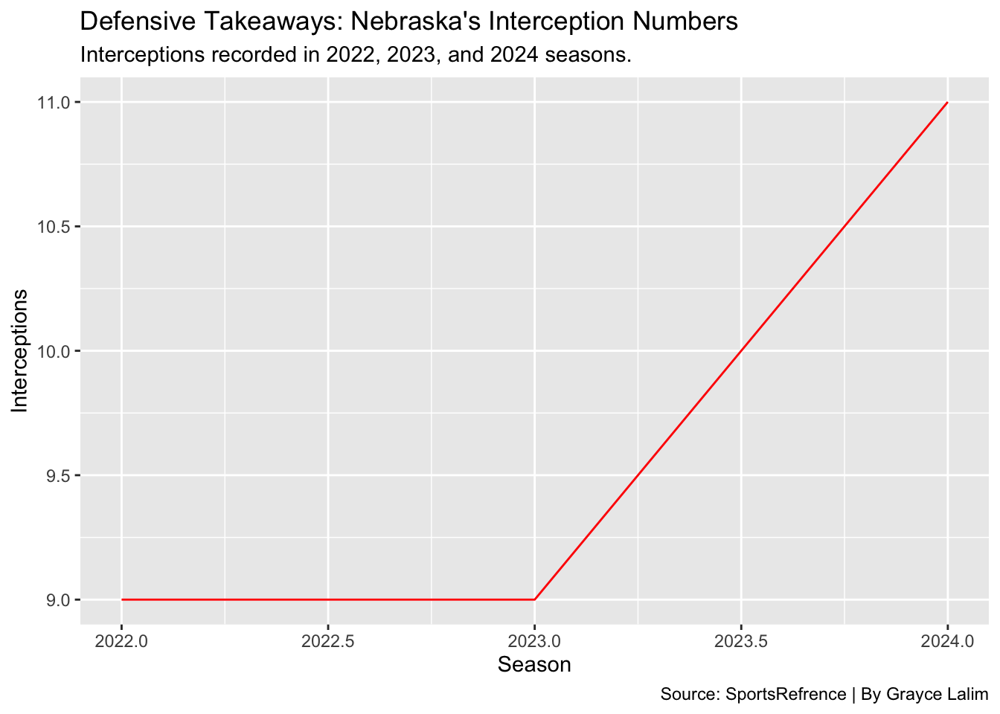

From Stats to Success: Matt Rhule’s Impact on Nebraska Football
nebraskafootball
bigten
mattrhule
Author
Grayce Lalim
Published
April 14, 2025
In September 2022, Nebraska football parted ways with head coach Scott Frost, who had been brought in with hopes of “saving” the program. Just two months later, in November, the Huskers hired Matt Rhule—a coach known for revitalizing struggling teams like Temple and Baylor. Rhule embraced Nebraska’s blue-collar roots, its passionate fanbase, and the deep-seated desire to return to greatness. “We’re not just going to restore Nebraska football,” he said in his introductory press conference, “we’re going to evolve it.
During the remainder of the 2022 season, interim head coach Mickey Joseph stepped in, helping improve play on both sides of the ball. Despite the improvements, Nebraska finished the season with a 3-6 record after Frost’s departure. It would take a few more seasons for the program to truly find its footing again.
Although the defense gained more yards in 2022, the offense was outperformed in both the 2023 and 2024 seasons.
Code
library(tidyverse)library(ggplot2)season_data <-data.frame(Season =c("2022", "2023", "2024"),OffenseYards =c(344, 312, 359),DefenseYards =c(414, 303, 317))library(ggplot2)library(tidyr)# Convert to long formatlong_data <-pivot_longer(season_data,cols =c(OffenseYards, DefenseYards),names_to ="Type",values_to ="Yards")ggplot(long_data, aes(x = Season, y = Yards, fill = Type)) +geom_bar(stat ="identity") +labs(title ="Offense vs Defense Yards by Season",x ="Season",y ="Total Yards",subtitle="Offensive and Defense Yards Before and After Matt Rhule.", caption="Source: SportsRefrence | By Grayce Lalim",fill ="Category") +scale_fill_manual(values =c("OffenseYards"="red", "DefenseYards"="black")) +coord_flip()
Although Matt Rhule’s first year at Nebraska wasn’t flashy, it laid a strong foundation for the program’s future. He began establishing a new standard for recruiting and defining what the team stands for—both on and off the field. By the end of the 2023 season, Nebraska fans could sense a shift. While the stats didn’t necessarily surpass previous years, there was a noticeable reduction in mistakes and a clearer identity taking shape.
Rhule’s impact was especially evident on the defensive side of the ball.
He embraced Nebraska’s deep-rooted Blackshirt tradition and, by his second season in 2024, the defense was playing with renewed intensity. Opponent rushing yards were cut by 40%, and the Huskers climbed into the top 15 nationally in turnovers forced. Sack totals nearly doubled, and Nebraska began winning close games that previously slipped away.
One of the most telling signs of improvement was the increase in interceptions by the defense, as shown here:
Code
library(tidyverse)#| warning: false#| message: falsedefense <-read_csv("data/defense.csv")ggplot() +geom_line(data=defense, aes(x=Season, y=Int), color="red") +geom_point(data=defense, aes(x=Season, y=Int), color="red")|>labs(x="Season", y="Interceptions", title="Defensive Takeaways: Nebraska's Interception Numbers", subtitle="Interceptions recorded in 2022, 2023, and 2024 seasons.", caption="Source: SportsRefrence | By Grayce Lalim" )

On offense, Nebraska became both efficient and unpredictable. Rhule’s staff embraced a dual-threat quarterback system, which added a dynamic edge to the Huskers’ play-calling. The team’s scoring average jumped from just 22.6 points per game to over 30. Total rushing and receiving yards surged to 4,667 in the 2024 season, up from 4,130 in 2022.
The 2024 season also kicked off with major excitement, as Nebraska landed the No. 1 quarterback in the nation—5-star recruit Dylan Raiola.
The improvements weren’t just in the big plays. Passing completion percentage rose by nearly 7%, third-down conversions improved by 10%, and red zone efficiency ranked among the best in the Big Ten.
By the 2024 season, Nebraska had finally turned a corner—finishing with a winning record and securing its first bowl game victory since 2015. For the first time in years, there was real national buzz surrounding the program. The improvement wasn’t just in the stats; Nebraska football felt reborn in the eyes of its fans.
Inside the locker room, there was a clear sense of belief and commitment. Players bought into Matt Rhule’s vision, and the culture shift was evident. Top-tier recruits started choosing Nebraska, fueling excitement not just within the team, but across Husker Nation.
Memorial Stadium was once again packed with passion—filled with hope, not just habit.
“You don’t just build a team,” Rhule said after a statement win over Wisconsin. “You build belief. And once you have that—anything’s possible.”